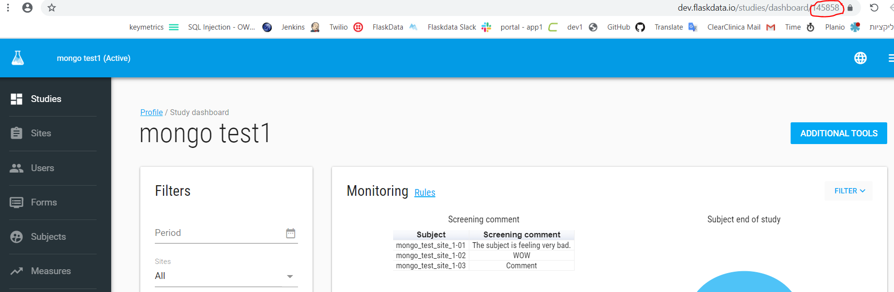
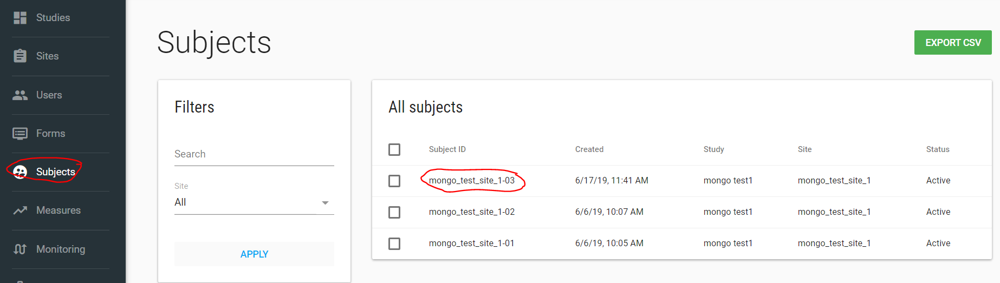
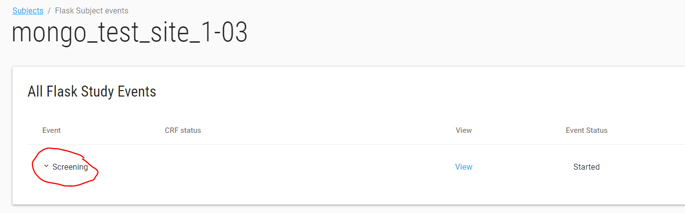
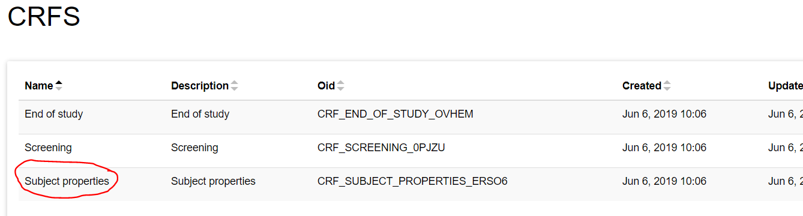
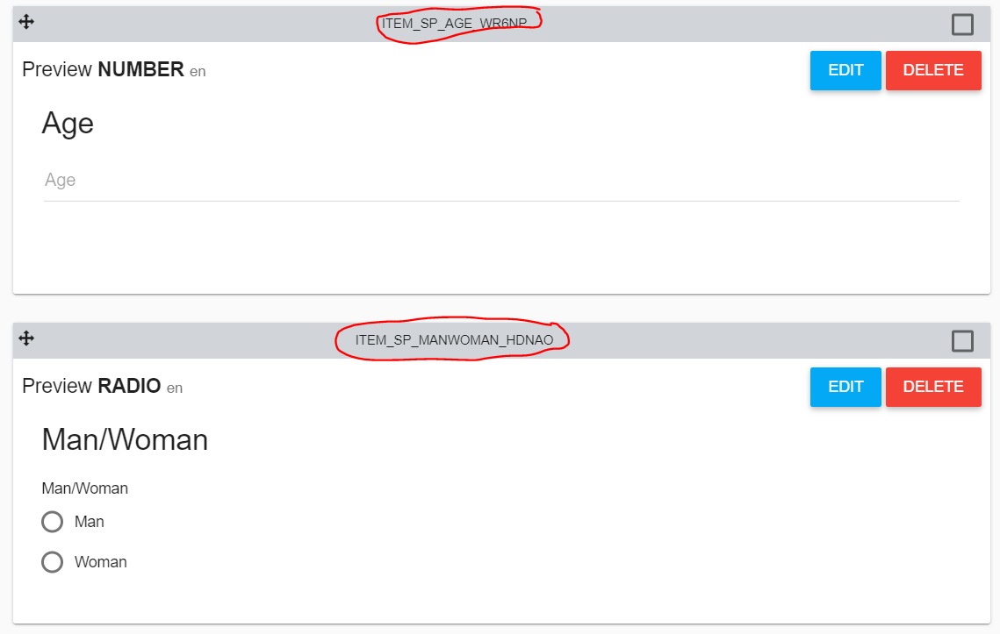
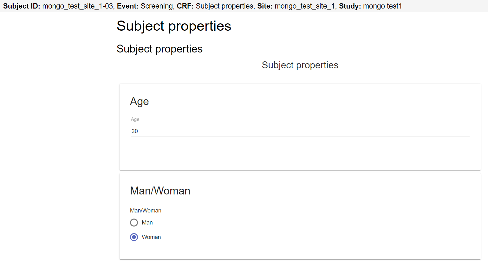

API flows
The API has 2 parts of APIs - EDC and Flask.
- EDC - APIs are related to ClinCapture EDC (extract EDC data and etc.)
- Flask - APIs are related to flask data (extract data, insert data and etc.)
NOTES:
-
Authorization parameter in the header request should be the token you had get before from you authorization request.
-
EDC parameter in the header request should be the EDC DB name.
In this document there are a few examples of FlaskData APIs - There are more EDC APIs, their description exists in swagger.
For more details and questions contact us by sending email to support@clearclinica.com.
EDC
Extract EDC Data
There are a few APIs you can use to extract your ClinCapture EDC data.
For example:
/edc/study/extract-data
This API extract EDC data of each table/view/function (like functionName()) and return json.
fromDate, toDate, sort, filters and inputVariables(if tableName is a function) are optional values.
Filters and inputVariable json objects - the key is the column name/ input variable name in postgres, the json value is the compare value (like where site = XXX)/ input value in function (like schema.function(XXX)).
For example:
{
"tableName": "cc_event_data",
"fromDate": "2017-01-01T00:00:00.000Z",
"toDate": "2019-02-01T00:00:00.000Z",
"sort": "subject"
}
Another example:
{
"tableName": "cross_event_crf_data"
}
/edc/study/download-csvs-data
This API downloads a zip folder includes EDC study data. Each csv is an event CRF data.
/edc/study/extract-study-data-at-crf-level
This API extracts EDC data at CRF level and returns the data as a json object.
This API returns only CRFs with data.
This API has filters option (from date and to date are related to date_updated column, filters can include each column and value with equal sign).
/edc/study/extract-study-data-at-crf-level-to-csvs
This API extracts EDC data at CRF level and returns a zip folder includes CSV files (each CRF as CSV file).
This API returns only CRFs with data.
This API has filters option (from date and to date are related to date_updated column, filters can include each column and value with equal sign).
/edc/subjects/create-subject
This API creates a subject in EDC DB and returns the study_subject_id value.
Flask
/flask/customer/extract-data-to-json
This API extracts data from flask tables and views for your customer.
The table/ view should have customer_id column for this process.
For example: studies table, audit_user_login, billing_reports_customer and etc.
studyIds and filters are optional.
/flask/customer/download-billing-reports
This API downloads a billing reports folder for the month of the billingDate parameter.
The billing report zip folder includes all the billing report files for your customer.
NOTE - This process will download files only if the billing reports features turn on in your customer account.
/flask/device/get-logs
This API returns device logs of a study.
/flask/device/insert-log
This API inserts device log into flaskData with correct study_id according to EDC.
payload parameter is optional and can include each key value pairs.
/flask/study/create-update-flask-study
This API creates/updates study in FlaskData.
/flask/site/create-update-flask-site
This API creates/updates site in FlaskData.
/flask/study/create-update-flask-study-users
This API creates user if not exists and assigned users to study.
NOTE - This API deletes the users that were assigned to this study and assigned the new users.
/flask/subject/extract-study-event-data-to-CSV
This API extracts all study data (from FlaskForms) based on study id and download CSV files.
/flask/crf/create-CRF-and-insert-data
This API creates CRF in existing event and insert data
Example - Creates a new AE (adverse event) CRF in existing event.
/flask/crf/create-event-CRF-and-insert-data
This API creates event and CRF and inserts data.
Example - Creates a new Medication event with CRF and inserts data.
/flask/crf/get-CRF-data-ids
This API returns subject's crf data Id (unique for each CRF) for specific crf name.
/flask/crf/update-CRF-data
This API updates CRF data by crf data id.
Use Cases
NOTE: The following examples require jQuery later version
General example of extract data using JS:
var xhrcall = $.ajax({
url: 'https://dev-api.flaskdata.io/flask/customer/extract-data-to-json',
type: 'POST',
headers: {
'Authorization': jwt},
data: '{
"tableName": "studies",
"fromDate": "2018-03-29T11:44:12.511Z",
"toDate": "2019-03-29T11:44:12.511Z"
}',
contentType: 'application/json'
});
//promise syntax to render after xhr completes
xhrcall
.done(function(data){
// Enter your code here
})
.fail(function(error) {
if(error) {
// Enter your code here
}
});
Save data in CRF JS Example.
Your study uses FlaskForms application.
You have a mobile app and you want to collect data and save it to a Flask Forms Event/CRF
This JS code is an example to create CRF and save its data into existing event.
$(document).ready(function() {
// Call insertDataIntoFlaskFormsCRF function to assign new CRF and save data.
// Input values : user email, user password, study id, subject label, event name, CRF name, CRF data.
insertDataIntoFlaskFormsCRF("mongositerole@clearclinica.com", "123456", 145858, 'mongo_test_site_1-03', 'Screening', 'Subject properties', {"ITEM_SP_AGE_WR6NP":30, "ITEM_SP_MANWOMAN_HDNAO":2});
});
var insertDataIntoFlaskFormsCRF = function(uEmail, uPass, studyId, subjectLabel, eventName, crfName, crfData){
// Get token
getFlaskDataToken(uEmail, uPass, function(userToken){
var token = userToken;
// Create new CRF in existin event and insert data
createCRFandInsertData(token, studyId, subjectLabel, eventName, crfName, crfData, function(crfDataId){
console.log(crfDataId);
// Save this crfDataId if you will need to update this CRF data
});
});
}
var getFlaskDataToken = function(email, password, cb) {
// Get JWT token
var xhrcall = $.ajax({
url: 'https://dev-api.flaskdata.io/auth/authorize',
type: 'POST',
data: '{"email":"' + email + '","password":"' + password +'"}',
contentType: 'application/json'
});
//promise syntax to render after xhr completes
xhrcall
.done(function(data){
// Enter your code here
cb(data.token);
})
.fail(function(error) {
if(error) {
// Enter your code here
console.log('Failed to get token ' + error);
}
});
}
// Create new CRF and insert data
// /flask/crf/create-CRF-and-insert-data
var createCRFandInsertData = function(token, study_id, subject_label, event_name, crf_name, crf_data, cb) {
var xhrcall = $.ajax({
url: 'https://dev-api.flaskdata.io/flask/crf/create-CRF-and-insert-data',
type: 'POST',
headers: {
'Authorization': token},
data: '{"study_id": '+study_id+',"subject_label": "'+subject_label+'","event_name": "'+event_name+'","crf_name": "'+crf_name+'","crf_data": '+ JSON.stringify(crf_data) +' }',
contentType: 'application/json'
});
//promise syntax to render after xhr completes
xhrcall
.done(function(data){
// Enter your code here
cb(data.crfDataId);
})
.fail(function(error) {
if(error) {
// Enter your code here
console.log('Failed to create CRF and insert data :' + JSON.stringify(error));
}
});
}
Your application should call insertDataIntoFlaskFormsCRF function with the following input parameters:
- user email - Your customer API user email address for authorization.
- user password - Your customer API user password for authorization.
- studyId - Your study Id parameter, You can take it from study dashboard URL. 
- Subject label - Subject label from flaskdata, for example: 
- Event name for creating CRF, for example: 
- CRF name for creating CRF, for example (in flask forms): 
- CRF data - for saving CRF data, Json structure, key value pair, The key is the item's variable (as it's defined in flask forms) and the value is the data for this variable.
for example:
{"ITEM_SP_AGE_WR6NP":30, "ITEM_SP_MANWOMAN_HDNAO":2} The output should be new CRF for the subject with the correct data, for example: 
Example of calling FlaskData API using jQuery older version
var http = new XMLHttpRequest();
var url = 'https://dev-api.flaskdata.io/auth/authorize';
var params = '{"email":"xxx@gmail.com","password":"123456"}';
http.open('POST', url, true);
//Send the proper header information along with the request
http.setRequestHeader('Content-type', 'application/json');
http.onreadystatechange = function() {//Call a function when the state changes.
if(http.readyState == 4 && http.status == 200) {
alert(http.responseText);
}
}
http.send(params);